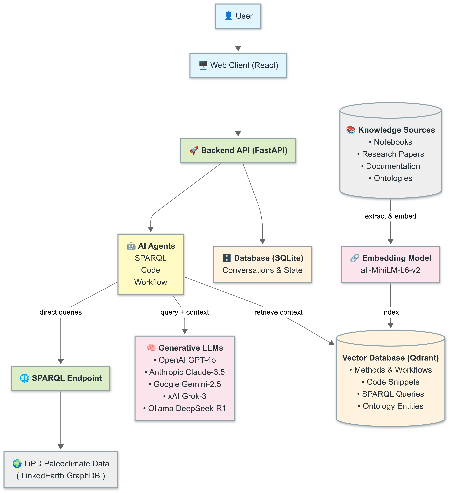

PaleoPal – High-Level Architecture Overview

Diagram source: ArchitectureDiagram.mmd
PaleoPal is an AI-powered assistant for paleoclimate research. At its core it combines retrieval-augmented generation (RAG), a set of specialised AI agents, and a vector knowledge base derived from notebooks, papers and ontologies.
1. Building Blocks
| Layer | Key Component(s) | Role |
|---|---|---|
| User Interface | React single-page app | Chat UI & progress visualisation |
| API Layer | FastAPI service | REST endpoints + WebSocket streaming |
| Core Engine | Agent Registry & three LangGraph agents | Orchestrates requests – chooses agent, streams results |
| Generative AI | OpenAI GPT-4o, Anthropic Claude-3.5, Google Gemini-2.5, xAI Grok-3, Ollama DeepSeek-R1 | Large-language-model reasoning & content generation |
| Vector Knowledge Base | Qdrant (all-MiniLM-L6-v2 embeddings) | Semantic search over domain knowledge |
| Knowledge Sources | Notebooks, research papers, API docs, ontologies | Raw material (extracted → embedded → stored) |
| Metadata Store | SQLite | Conversations & agent state |
| External Data | LinkedEarth GraphDB SPARQL endpoint | Live paleoclimate datasets |
2. Key Data Flow (RAG)
- User query → UI → FastAPI.
- Agent selection – registry routes the request to:
- SPARQL Agent (build queries)
- Code Agent (write analysis code)
- Workflow Agent (plan multi-step workflows)
- Agent execution flow (summary):
- SPARQL Agent – similar-query lookup → entity match → (optional) clarification → query generation → execution → refinement.
- Code Agent – example search → (optional) clarification → code generation → refinement.
- Workflow Agent – request extraction → context search → (optional) clarification → workflow plan generation.
- Context retrieval – agent performs semantic search against Qdrant and gathers the running conversation history (previous code, queries, messages):
sparql_queries,ontology_entities→ SPARQL Agentnotebook_snippets,readthedocs_docs→ Code Agentliterature_methods,notebook_snippets→ Workflow Agent
- Augmented prompt – agent merges top-k docs with original question.
- Generation – prompt sent to the selected LLM provider.
- Response streaming back to the client.
3. Knowledge Ingestion Pipeline
Sources ──► Extractors ──► Embedding (all-MiniLM-L6-v2) ──► Qdrant- Notebooks → code snippets & workflows (
notebook_snippets,literature_methods) - Research papers → method steps (
literature_methods) - API documentation → function/class snippets (
readthedocs_docs) - Ontologies → entities & relations (
ontology_entities) - Notebooks / docs → reusable SPARQL templates (
sparql_queries)
Ingestion tasks are decoupled; new sources can be added without touching the main application.
4. Deployment Snapshot
- Containers:
frontend,backend,qdrant(plus optionalgraphdb). - Internal network: single Docker network for inter-service traffic.
- Volumes: persistent storage for Qdrant and SQLite.
- Stateless services: front & back ends can scale horizontally; state lives in Qdrant/SQLite.
5. Extensibility Hot-Spots
- Agents – plug-in new LangGraph agents (e.g., visualisation agent).
- LLM providers – switch/add via config/env vars.
- Collections – create new Qdrant collections for fresh domains.
- Extractors – contribute new document-type extractors.
6. Local Setup
VSCode Extension: Local installation
- Open VS Code → Extensions view → “…” menu → Install from VSIX → select
vscode-extension/paleopal-vscode-extension-0.1.0.vsix. - Configure settings:
paleopal.backendUrl:http://localhost:8000/api(default)paleopal.defaultProvider: one ofopenai|anthropic|google|ollama|grok- Optionally set
paleopal.defaultModel.
- Available commands:
- PaleoPal: New Conversation
- PaleoPal: Ask Agent
- PaleoPal: Insert Result
- PaleoPal: Run Notebook Locally
Populate a local Qdrant database
This powers semantic search for agents. You can run Qdrant in Docker, set env vars, and run the indexers.
- Run Qdrant locally (recommended):
docker run -p 6333:6333 -p 6334:6334 \
-v qdrant-data:/qdrant/storage \
--name paleopal-qdrant qdrant/qdrant:v1.7.0If you use the project docker-compose.yml, Qdrant maps to host 6335. In that case, set QDRANT_PORT=6335 when indexing from your host.
- Python environment (host):
cd /Users/varun/git/paleopal
python3 -m venv .venv
source .venv/bin/activate
pip install -r backend/requirements.txt- Required environment variables (host shell):
export QDRANT_HOST=localhost
export QDRANT_PORT=6333
# Optional: only if your Qdrant requires auth
# export QDRANT_API_KEY=...
# Optional: embedding model for sentence-transformers
# Note: libraries read EMBED_MODEL (not EMBED_MODEL_NAME)
# export EMBED_MODEL=all-MiniLM-L6-v2- Prepare notebooks to index:
mkdir -p /Users/varun/git/paleopal/backend/libraries/notebook_library/my_notebooks
# Copy your .ipynb files into this folder- Verify Qdrant connectivity (optional):
cd /Users/varun/git/paleopal/backend/libraries
python qdrant_config.py --status- Run the indexers:
cd /Users/varun/git/paleopal/backend/libraries
bash index_everything.shThis will index SPARQL queries, ontology entities, notebook snippets/workflows from notebook_library/my_notebooks, ReadTheDocs docs/symbols/code, and extracted literature methods. To index only notebooks:
cd /Users/varun/git/paleopal/backend/libraries
python notebook_library/index_notebooks.py --keep-invalid --no-synth-imports notebook_library/my_notebooks- Inspect collections and counts (optional):
cd /Users/varun/git/paleopal/backend/libraries
python qdrant_config.py --libraries
python qdrant_config.py --healthNotes: - If using docker-compose, either set export QDRANT_PORT=6335 on host before indexing, or run indexing from within a container that can reach qdrant:6333. - The first run downloads the embedding model; allow a few minutes.
Last updated 2025.